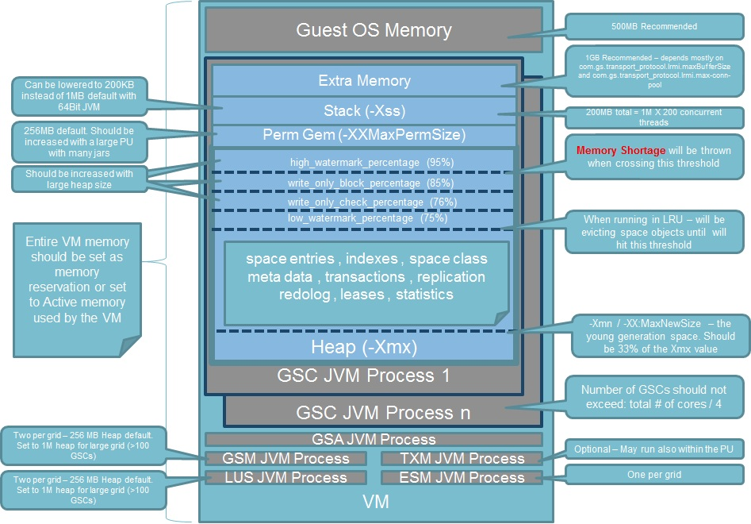

In most cases, the applications that use

The following
GSA - Very lightweight process in terms of its memory and CPU usage. This process does not require any tuning. You should have one per machine, or in some cases one per Zone.
GSC - The runtime environment. This is where the data grid and the deployed processing units run. This process requires the relevant tuning to address the memory capacity required. Number of GSCs should not exceed: Total # of cores / 4. With virtual machine setup you should have one GSC per VM.
GSM - Lightweight process. Does not require any tuning unless you have very large cluster (over 100 nodes). You should have two of these per data grid.
LUS - Lightweight process. Does not require any tuning unless you have very large cluster (over 100 nodes). You should have two of these per data grid.
ESM - Lightweight process. Does not require any tuning unless you have very large cluster (over 100 nodes). You should have one of this per data grid.
JVM Memory for a GSC = JVM Max Heap (-Xmx value) + JVM Perm Size (-XX:MaxPermSize) + NumberOfConcurrentThreads * (-Xss) + "extra memory"
It may be necessary to calculate the Space Object Footprint. For instructions on how to do this, refer to Capacity Planning.
A Compound Index can be used with AND queries to speed up the query execution time. This approach combines multiple fields into a single index. Using a Compound Index avoids having multiple indexes on multiple fields, which in turn can reduce the index footprint.
The -XX:+UseCompressedOops allows a 64-bit JVM heap size of up to 32GB to use a 32-bit reference address. This can reduce the overall footprint by 20-40%.
Compressed Storage mode can be used to reduce the footprint of non-primitive fields when stored within the Space. This option compress the data on the client, where data stays compressed in the Space and is decompressed when it is read back on the client side. This approach may affect performance.
This option is not available for
The default Space Data source Initial Load behavior loads all Space class data into each partition, and later filters out irrelevant objects. This activity may introduce large amount of garbage to be collected. You can use the SQL MOD query to fetch only the relevant data items to be loaded into each partition, which speeds up the initial load time and drastically reduce the amount of garbage generated during this process.
The amount of redo log data depends on the following:
Amount of in-flight activity
Backup performance
Primary backup connectivity (long disconnection means a lot of redo log data in memory).
The redo logs swap over to the hard disk at some point, therefore is it recommended to place its location on an SSD drive. Do not use a regular hard drive to store redo log data. The redo log data footprint is similar to the actual raw data footprint without indexes.
This section provides examples of the JVM settings that are recommended for applications that generate A large number of temporary objects. In such situations, you afford long pauses due to garbage collection activity. These settings are appropriate for cases where you are running a IMDG, or when the business logic and the data grid are co-located. For example, a data grid with co-located polling/notify containers, task executors, or Sservice remoting.
The following JVM settings are for g1 mode, and are useful for low-latency scenarios:
-server -Xms8g -Xmx8g -XX:+UseG1GC -XX:MaxGCPauseMillis=500 -XX:InitiatingHeapOccupancyPercent=50 -XX:+UseCompressedOops
If your JVM is throwing an "OutOfMemoryException', the JVM process should be restarted. You will have to to add this property to your JVM setting: SUN -XX:+HeapDumpOnOutOfMemoryError -XX:OnOutOfMemoryError="kill -9 %p" JROCKIT -XXexitOnOutOfMemory
For information on how to configure your environment for Java 11 or higher, refer to the page about
This setting controls the size of the heap allocated for the young generation objects (all the objects that have a short lifetime). Young generation objects are in a specific location in the heap, where the garbage collector passes frequently. All new objects are created in the young generation region (called "eden"). When an object survives (is still "alive") after more than 2-3 gc cleaning cycles, it will be moved to the "old generation" region; these objects are called "survivors". A recommended value for the Xmn should be 33% of the Xmx value.
In many cases, the thread stack size needs to be tuned because the default size is too high. In Java SE 6 OS, the default thread stack size on Sparc is 512k for 32-bit VMs, and 1024k for 64-bit VMs. On x86 Solaris/Linux OS, the thread stack size is 320k for 32-bit VMs and 1024k for 64-bit VMs.
On Microsoft Windows OS, the default thread stack size is read from the binary (java.exe). As of Java SE 6, this value is 320k for 32-bit VMs and 1024k for 64-bit VMs. You can reduce your thread stack size by running with the -Xss option. For example:
java -server -Xss384k
In some versions of Microsoft Windows, the OS may round up thread stack sizes using very coarse granularity. If the requested size is less than the default size by 1K or more, the stack size is rounded up to the default; otherwise, the stack size is rounded up to a multiple of 1 MB. 64K is the least amount of stack space allowed per thread.
Extra memory is the memory required for NIO direct memory buffers, JIT code cache, classloaders, Socket Buffers (receive/send), JNI, and GC internal info. Direct memory buffer usage for Socket Buffer utilization on the GSC side:
com.gs.transport_protocol.lrmi.maxBufferSize X com.gs.transport_protocol.lrmi.max-threads
For example - with the default maxBufferSize size and 100 threads:
64k X 100 = 6400KB = 6.4MB
With large objects and batch operations (readMultiple, writeMultiple, Space Iterator) increasing the maxBufferSize may improve system performance.
This JVM option specifies the maximum total size of java.nio (New I/O package) direct buffer allocations. It is used with network data transfer and serialization activity.
The default value for direct memory buffers depends on your version of your JVM. Oracle HotSpot has a default equal to the maximum heap size (-Xmx value), although some early versions may default to a particular value. To control this specific memory area, use the -XX:MaxDirectMemorySize property. See the following example:
java -XX:MaxDirectMemorySize=2g myApp
Format:
-XX:MaxDirectMemorySize=size[g|G|m|M|k|K]`
Some useful references:
It is highly recommended to use the latest JDK release when using these options.
To capture detailed information about garbage collection and how it is performing, add the following parameters to the JVM settings:
-verbose:gc -XX:+PrintGCDetails -XX:+PrintGCTimeStamps -XX:+PrintGCDateStamps -Xloggc:/path/to/log/directory/gc-log-file.log
Modify the path and file names appropriately. You must use a different file name for each invocation in order to not overwrite the files from multiple processes.
Adding %p to the log name, for example gc-log-file_%p.log, tells the JVM to generate an individual log file per PID.
In order to provide the highest level of performance, -XX:SoftRefLRUPolicyMSPerMB is the parameter that allows you to determine how much data is cached by allowing the JVM to control how long it endures; it is recommended to set this value to 500 in active, dynamic systems:
-XX:SoftRefLRUPolicyMSPerMB=500
The above means that softly reachable objects will remain alive for 500 milliseconds after the last time they were referenced.
A Space instance JVM holds the following in memory: Space entries, Indexes, Space class metadata, transaction, replication, redolog, leases and statistics.
In most cases, the applications that use
It may be necessary to calculate the Space Object Footprint. For instructions on how to do this for
A Compound Index can be used with AND queries to speed up the query execution time. This approach combines multiple fields into a single index. Using a Compound Index avoids having multiple indexes on multiple fields, which in turn can reduce the index footprint.
The -XX:+UseCompressedOops allows a 64-bit JVM heap size of up to 32GB to use a 32-bit reference address. This can reduce the overall footprint by 20-40%.
There are several types of storage optimization:
Class Optimization
This following mode is used to specify the Space itself as compressed. It is serialized level compressed. This compressed Storage mode can be used to reduce the footprint of non-primitive fields when stored within the Space. This option compress the data on the client, where data stays compressed in the Space and is decompressed when it is read back on the client side. This approach may affect performance.
If there is still not enough room in RAM, consider using Tiered Storage.
This option is not available for
The default Space Data source Initial Load behavior loads all Space class data into each partition, and later filters out irrelevant objects. This is the default behavior for numerical routing keys. This activity may introduce large amount of garbage to be collected. You can use the SQL MOD query to fetch only the relevant data items to be loaded into each partition, which speeds up the initial load time and drastically reduce the amount of garbage generated during this process.
The amount of redo log data depends on the following:
Amount of in-flight activity
Backup performance
Primary backup connectivity (long disconnection means a lot of redo log data in memory).
The redo logs swap over to the hard disk at some point, therefore is it recommended to place its location on an SSD drive. Do not use a regular hard drive to store redo log data. The redo log data footprint is similar to the actual raw data footprint without indexes.
It is recommended that for target as a backup or local view, to keep the redo log in memory. You need to take into account the redo log sizing when you are planning what will be in the RAM. For additional information refer to Controlling the Replication Redo Log.
This section provides examples of the JVM settings that are recommended for applications that generate A large number of temporary objects. In such situations, you afford long pauses due to garbage collection activity. These settings are appropriate for cases where you are running a IMDG, or when the business logic and the data grid are co-located. For example, a data grid with co-located polling/notify containers, task executors, or service remoting.
In Java 17, the handling of soft references has evolved, and the JVM no longer exposes -XX:SoftRefLRUPolicyMSPerMB for tuning. Instead, the JVM internally manages soft references more efficiently, and tuning this specific aspect manually is generally not necessary.
Soft references in Java 17 are still used for caching purposes, and they are cleared at the discretion of the garbage collector when the JVM detects memory pressure. The lifetime of soft references is now managed more transparently and dynamically, in line with modern garbage collection algorithms.
the -XX:+UseCompressedOops option is an important feature for optimizing memory usage in Java applications, especially those with large heaps. It's typically enabled by default in modern JVMs, including Java 17, and provides memory efficiency benefits without significant performance impact. It's generally safe to rely on the default behavior, but you can explicitly enable it if needed.
The -XX:MaxDirectMemorySize option in Java allows you to specify the maximum amount of memory that can be allocated for direct buffers used by the java.nio package, such as ByteBuffer.allocateDirect(). This memory is allocated outside of the Java heap, often by the operating system, and is not subject to garbage collection by the JVM.
Direct memory is used for operations that require interaction with native code or I/O operations, such as reading or writing data from files, network sockets, or using certain APIs like NIO channels. By default, the maximum direct memory size is limited by the maximum heap size (-Xmx), but -XX:MaxDirectMemorySize allows you to specify a separate limit.
Specifying Maximum Direct Memory Size: You can specify the maximum amount of direct memory in bytes, kilobytes, megabytes, or gigabytes. For example: sh java -XX:MaxDirectMemorySize=1G -jar your-application.jar
Default Value: If you don't specify -XX:MaxDirectMemorySize, the maximum direct memory size defaults to the same value as the maximum heap size (-Xmx).
Impact on System Resources: Direct memory is allocated outside of the Java heap and is managed by the operating system. Allocating too much direct memory can impact system resources, potentially leading to out-of-memory errors or decreased performance.
Use Cases: Use direct memory for operations that require interaction with native code or I/O operations. Examples include reading or writing large files, working with network sockets, or using NIO channels.
The -XX:MaxDirectMemorySize option allows you to specify the maximum amount of memory that can be allocated for direct buffers in Java. It's useful for controlling the usage of direct memory, especially in scenarios involving I/O operations or interaction with native code. Be mindful of the potential impact on system resources and allocate direct memory judiciously based on your application's requirements.
Extra memory is the memory required for NIO direct memory buffers, JIT code cache, classloaders, Socket Buffers (receive/send), JNI, and GC internal info. Direct memory buffer usage for Socket Buffer utilization on the GSC side:
com.gs.transport_protocol.lrmi.maxBufferSize X com.gs.transport_protocol.lrmi.max-threads
For example - with the default maxBufferSize size and 100 threads:
64k X 100 = 6400KB = 6.4MB
With large objects and batch operations (readMultiple, writeMultiple, Space Iterator) increasing the maxBufferSize may improve system performance.
It is highly recommended to use the latest JDK release when using these options.
In Java 17, the default GC is the G1 Garbage Collector. This makes it a good starting point for most applications unless specific requirements dictate otherwise.
To enable a specific GC algorithm, you can use JVM options when starting your Java application.
| Type Options | Recommendation | Rationale | Configuration |
|---|---|---|---|
| 1. General Purpose Use | G1 GC | Balanced performance and pause times. Suitable for a wide range of applications. | No special configuration needed as it is the default. |
| 2, Low Latency Requirements | ZGC or Shenandoah GC | Both provide very low pause times, suitable for applications where latency is a critical factor. |
ZGC: Enable with Shenandoah: Enable with |
| 3. Throughput-Centric Applications | Parallel GC | Maximizes throughput, suitable for batch processing or applications where throughput is more critical than pause times. | Enable with -XX:+UseParallelGC |
From the options above,
Following is an example followed by an explanation of how to define a verbose garbage collection
#!/bin/bash LOG_DIR="/path/to/logs"JAVA_OPTS="-Xlog:gc*:file=${LOG_DIR}/gc_%p.log:tags,uptime,time,level:filecount=10,filesize=10M"
-Xlog:gc*: Enables logging of all garbage collection-related events.
file=/path/to/logs/gc_%p.log: Specifies the path and name pattern for the log file, where %p is replaced with the PID.
tags,uptime,time,level: Specifies the tags to include in the log entries:
tags: Include tags in the log output.
uptime: Include the JVM uptime in the log entries.
time: Include the timestamp in the log entries.
level: Include the log level (e.g., info, warning, error).
filecount=10: Specifies the number of log files to keep.
filesize=10M: Specifies the maximum size of each log file.
-XX:+DisableExplicitGC -XX:+HeapDumpOnOutOfMemoryError -XX:HeapDumpPath=/path/to/heapdumps/
-XX:+DisableExplicitGC:
This option disables explicit garbage collection calls (System.gc()) made by the application or third-party libraries. This can help in avoiding performance issues caused by frequent full GCs triggered explicitly.
-XX:+HeapDumpOnOutOfMemoryError:
This option enables the JVM to generate a heap dump when it encounters an OutOfMemoryError. A heap dump is a snapshot of the JVM’s memory at a specific point in time and is useful for diagnosing memory leaks and other memory-related issues.
-XX:HeapDumpPath=/path/to/heapdumps/:
This option specifies the directory where the heap dump file should be saved. Make sure the specified directory exists and the JVM has write permissions to this directory.
Modify the path and file names appropriately. You must use a different file name for each invocation in order to not overwrite the files from multiple processes.
Adding %p to the log name, for example gc-log-file_%p.log, tells the JVM to generate an individual log file per PID.